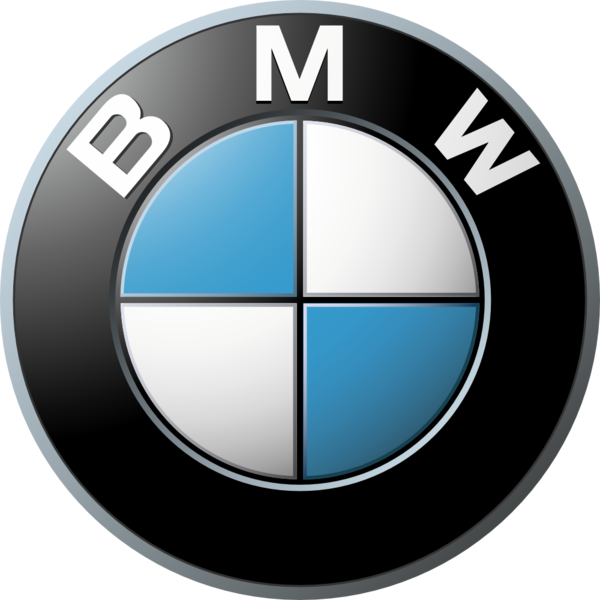

BMW
M2
COUPE
Заряженная адреналином динамика и впечатляющие характеристики.
- Высокопроизводительный рядный 6-цилиндровый бензиновый двигатель M
TwinPower Turbo мощностью 460 л.с. - Адаптивная подвеска М с активным дефференциалом М и задним приводом
- Механическая коробка передач или автомитичесая коробка
передач M Steptronic c функцией Drivelogic - 460 л.с, 550 Hm, 0-100км/ч за 4,1с (M Steptronic)
Воплощение немецкой инженерии и совершенства
Мощность
460 л.с.
Двигатель
Бензин